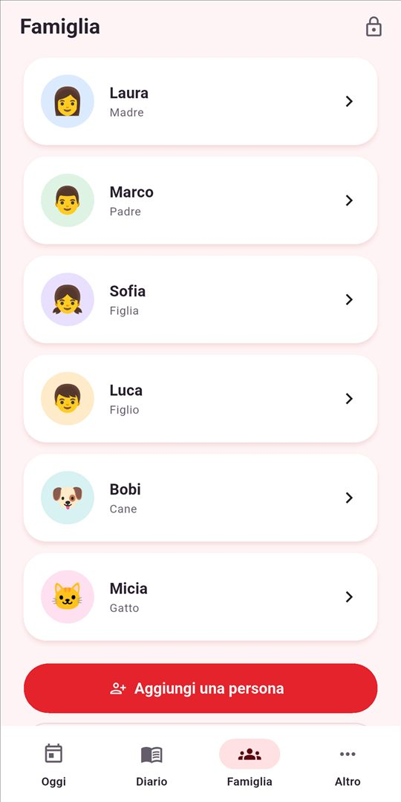

Privada, cifrada, sin internet
La salud de toda la familia, solo en tu teléfono
Medipop es un archivo privado para las enfermedades, las visitas, los tratamientos y las vacunas de las personas y los animales de casa. Lo que escribes se queda en el teléfono, cifrado.
Próximamente en App Store y Google Play



Qué hace
-
Sin internet y sin cuenta
La app no se conecta a internet y no tiene ni cuenta ni servidor. Sin publicidad, sin análisis de uso, sin rastreo.
-
Cifrado, solo en el teléfono
Base de datos cifrada con AES-256. La clave está protegida por el teléfono y por un código de recuperación que solo tienes tú: ni siquiera el desarrollador puede leer tus datos.
-
Personas y animales
Un perfil para cada uno, con su papel en la familia. Vacunas, enfermedades, visitas y tratamientos, con «Repetir este tratamiento» para no volver a escribirlo todo.
-
Intercambio entre padres
Exportas un archivo cifrado, lo envías con «Compartir» y el otro progenitor lo abre con «Abrir con Medipop». Funciona también entre iPhone y Android.
-
Recordatorios de medicinas
Tú eliges la hora a la que recordar una medicina. Eliges también para qué familiares recibirlos. La notificación nunca muestra el fármaco, a lo sumo el nombre del familiar, sin apellido, y puedes ocultarlo.
-
Cinco idiomas
En italiano, inglés, francés, español y alemán. Bloqueo de la app con huella dactilar o con el PIN del teléfono.
Un vistazo a la app

El diario de todo, con búsqueda 
Un tratamiento, para repetir con un toque 
Notificaciones: tú eliges para quién 
Las vacunas de cada uno 
Copia y familia: un archivo cifrado 
Busca entre todo lo que has escrito
Cómo protege los datos
- Sin cuenta, sin servidor, sin publicidad, sin análisis de uso, sin rastreo.
- Sin acceso a internet: la app ni siquiera pide el permiso para conectarse.
- Base de datos cifrada con AES-256. La clave está protegida por el teléfono y por un código de recuperación que solo tienes tú: el desarrollador no puede leer tus datos.
- Copias de seguridad cifradas (archivos
.medipop) que guardas o envías donde quieras, para cambiar de teléfono o para intercambiar los datos con el otro progenitor.
Si pierdes el código de recuperación y el teléfono, los datos se pierden para siempre. Por eso la app te pide que lo guardes en un lugar seguro la primera vez que la abres.
No es un producto sanitario
Medipop solo guarda lo que escribes. No calcula dosis, no da consejos médicos, no hace diagnósticos y no es un producto sanitario: no sustituye al médico ni al veterinario. No se pueden guardar fotos ni documentos.
Fuentes de la lista de medicamentos
Para ayudarte a escribir los nombres de los medicamentos, Medipop contiene una lista elaborada a partir de fuentes públicas. Es una referencia para los nombres, no información médica.
- Fonte: AIFA - Agenzia Italiana del Farmaco, dati aperti, licenza CC-BY 4.0. Datos reelaborados por Medipop.
- Source : Base de données publique des médicaments, medicaments.gouv.fr, Licence Ouverte. Reelaborado por Medipop.
- Source: European Medicines Agency (EMA), medicines data. Reuse authorised with acknowledgement of the source.